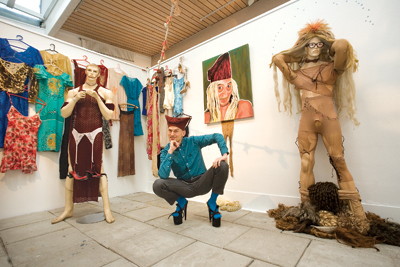

Trash drag í Listaskálanum, Sosialurin, Færøerne. |
 |
Ein av teimum 15 listafólkunum á Várframsýningini í Listaskálanum, er Dennis Agerblad. Hann hevur millum annað gjørt eina installatión við klæðum frá trash drag veitslum |

Evnið á Várframsýningini í Listaskálanum, sum Rannvá Holm Mortensen og Ole Wich hava samskipað, er samleiki. 15 listafólk eru við, og serligur gestur er Dennis Agerblad, sum stendur fyri tí mest sermerktu framsýningini. Hann hevur fingið gott pláss at breiða seg út í høllini, og hevur á fýra snórum hongt upp stykkir av nylonsokkum, hann hevur brúkt gjøgnum árini sum tónleikari og framførari. Í miðdeplinum stendur ein brúðarkjóli, ið er svartur niðast av skitti, frá tí hann hevur gingið í honum eftir gøtunum í Keypmannahavn. Hann er eisini litaður við reyðum, sum um okkurt er stoytt á kjólan. Eilen Anthoniussen |